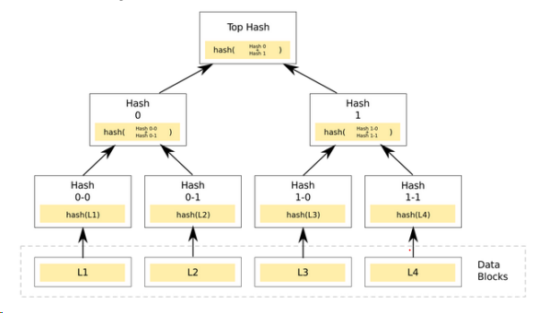

Suppose that we have a hypothetical machine with the following characteristics
Suppose that initially, blocks A and B are cached, but C and D are not. Blocks A and B are dirty and recently written with values 0111 and 0000, respectively.
The memory can hold four data blocks: A, B, C, and D. Their block addresses are 00, 01, 10, and 11, respectively.
We employ a block encryption function that produces the following 4-bit encrypted value given some 4-bit input (shown in the table below)
Suppose that initially, blocks A and B are cached, but C and D are not. Blocks A and B are dirty and recently written with values of and , respectively.
Assuming a direct encryption scheme (i.e. electronic codebook mode) the encryption of block A is ___. The encryption of block B is ___.
Question 1 answers
Block A:
Block B:
Question 2 - Counter Mode Encryption
Assume a counter-mode encryption using a 4-bit global counter. The counter value is currently and the current address of block A is . Assume that a counter is incremented before used for encryption (and not the other way around).
If block A is written back to memory, the encryption seed that is used is what? What is the pad? What is the cipher text of Block A that is written to memory?
Question 2 answers
Seed Calculation
Seed = Address || Counter
Seed = || + 1
Seed =
Pad Calculation
Pad = E(Seed)
Pad = E()
Pad =
Cipher Text Calculation
Cipher Text = Address XOR Pad
Cipher Text = XOR
Cipher Text =
Question 3 - Timestamp Encryption
a) Assume a time stamp based memory encryption scheme with a current clock tick on . What would be the next clock tick? ____
b) Continuing from the answer for question a. What would be the clock tick after that? ____.
c) How many clock ticks until values will be recycled? ____
Question 3 answers
a)
b)
c)
Question 4
a. What is a common vulnerability in hash functions? ___
b. What is a solution to that vulnerability that is used in merkle trees? ___
Question 4 answers
a) Birthday attack
b) HMAC, Keyed HMAC, etc.
Question 5 - Merkle Tree
Assume the following Merkle Tree

Also assume that blocks L1, L2, L3 and L4 have initial values of , , , and respectively. The hash function takes in 4 bits as input and returns 2 bits as output.
a. Given the above input and output, what is the value of Hash 0 (i.e., root of L1 and L2)? ____
b. Given the above input and output, what is the value of Hash 1 (i.e., root of L3 and L4)? ____
c. Given the answers to questions a and b, what is the root value of the merkle tree? ____
Question 5 answers
a)
H(L1) = E() =
H(L2) = E() =
H(L1) || H(L2) = || =
b)
H(L3) = E() =
H(L4) = E() =
H(L3) || H(L4) = || =
c)
Root = H(H(L1) || H(L2)) || H(H(L3) || H(L4))
Root = H( || ) || H( || )
Root = H() || H()
Root = || =
Question 6
Assume a Merkle Tree with a -bit hash and -byte block size.
a) The max arity of the merkle tree is ___.
b) The ratio of merkle tree to data is ___.
Question 6 answers
a)
byte = bits.
bits / bits =
b)
(1 / max_arity) / (1 - (1 / max_arity))
(1 / ) / (1 - (1 / ))
Question 7
a. What's a potential issue with using vanilla merkle trees to protect your data? ___
b. What's a good solution to that problem? ___
Question 7 answers
a) Most merkle trees are too large
b) Using a bonsai merkle tree, building a merkle tree over just the counters, and adjacent answers.